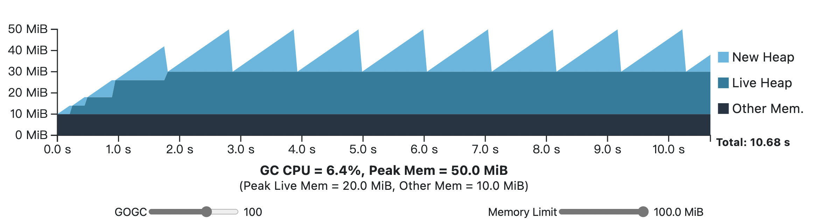
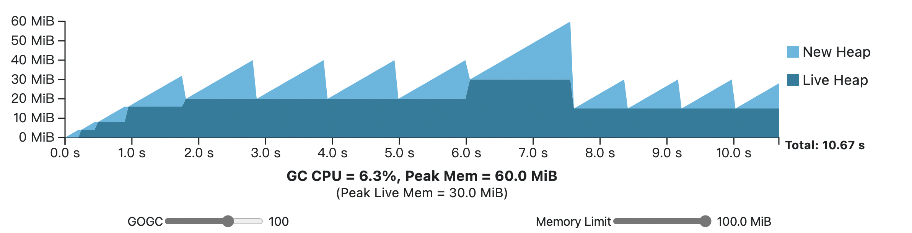

Go官方原文: A Guide to the Go Garbage Collector
简介
本指南旨在帮助高级Go语言用户更好地了解Go语言垃圾回收器的使用成本。 它还提供了Go用户如何利用这些知识来提高应用程序的资源利用率的指导。 它并不假设你了解垃圾回收，但假设你熟悉Go语言。
Go语言负责安排Go语言值的存储。在大多数情况下，Go语言开发人员根本不需要关心这些值存储在哪里，或者为什么要存储。 然而，在实践中，这些值通常需要存储在计算机物理内存中，而物理内存是有限的资源。 因为内存是有限的，所以必须小心地管理和回收内存，以避免在执行Go语言程序时耗尽内存。 Go语言的工作就是根据需要分配和回收内存。
自动回收内存的另一个说法是垃圾回收。 从较高的层次上讲，垃圾回收器（或简称为GC）是一个系统，这个系统通过标识内存的哪些部分不再需要来代表应用程序回收内存。 Go语言的标准工具链提供了一个运行时库，它随每个应用程序一起提供，并且这个运行时库包含了一个垃圾回收器。
请注意，Go语言规范并不能保证本指南所描述的垃圾回收器的存在，只不过Go语言本身负责管理Go语言值的底层存储。 这一省略是有意的，并允许使用完全不同的内存管理技术。
因此，本指南是关于Go语言的一个具体实现的指导，可能不适用于其他实现。 具体来说，本指南适用于标准工具链（gc Go compiler和工具）。 Gccgo和Gollvm都使用非常相似的GC实现，因此许多相同的概念都适用，但细节可能会有所不同。
此外，这是一个一直在修正的文档，随着时间的推移而变化，以最好地反映Go语言的最新版本。 本文档目前描述的是Go语言1.19中的垃圾回收器。
价值所在
在深入研究GC之前，让我们首先讨论一下不需要由GC管理的内存。
例如，存储在局部变量中的非指针Go语言的值可能根本不会被Go语言的GC管理，Go语言会安排内存的分配，并将其绑定到创建它的词法作用域中。 一般来说，这比依赖GC更有效率，因为Go语言编译器能够预先确定何时释放内存，并发出清理内存的机器指令。 通常，我们把这种为Go语言的值分配内存的方式称为“栈分配”，因为空间存储在goroutine栈中。
如果Go语言的值不能以这种方式分配内存，则Go语言编译器无法确定它的生存期，那么这些值就被称为“逃逸到堆”。 “堆”可以被认为是内存分配的一个大杂烩，Go语言的值需要被放置在堆的某个地方。 在堆上分配内存的操作通常称为“动态内存分配”，因为编译器和运行库都很少会对如何使用内存以及何时可以清理内存做出假设。 这就是GC的用武之地：它是一个专门标识和清理动态内存分配的系统。
Go语言的值需要逃逸到堆中的原因有很多。 一个原因可能是其大小是动态确定的。 例如，考虑一个切片的支持数组，它的初始大小由一个变量而不是一个常量确定。 请注意，逃逸到堆也必须是可传递的：如果一个Go值的引用被写入到另一个已经被确定为逃逸的Go值中，那么这个值也必须逃逸。
Go语言的值是否逃逸取决于使用它的上下文和Go语言编译器的逃逸分析算法。 当价值观逃逸时，试图准确地列举它将是脆弱和困难的：算法本身相当复杂，并且在不同的Go语言版本中会有所变化。 有关如何识别哪些值逃逸而哪些值不逃逸的详细信息，请参阅消除堆分配一节。
跟踪垃圾回收
垃圾回收可能指自动回收内存的众多实现方法，例如引用计数。 在本文档的上下文中，垃圾回收指的是跟踪垃圾回收，其通过循着指针来标识正在使用的、所谓的活动对象。
让我们更严格地定义这些术语:
- 对象 - 对象是一个动态分配的内存块，包含一个或多个Go值。
- 指针 - 指向对象内任何值的内存地址。 这自然包括
*T形式的Go语言值，但也包括部分内置Go语言值。 字符串、切片、通道、map和接口值都包含GC必须跟踪的内存地址。
对象和指向其他对象的指针一起形成对象图。 为了识别活动内存，GC从程序的根开始遍历对象图，程序明确使用的对象的指针。 根的两个例子是局部变量和全局变量。 遍历对象图的过程被称为扫描。
此基本算法对所有跟踪GC通用。 跟踪GC的不同之处在于，一旦它们发现内存是活的，它们会做什么。 Go语言的GC使用了标记(mark)—清除(sweep)技术，这意味着为了跟踪它的过程，GC也会将它遇到的值标记为活动的。 跟踪完成后，GC将遍历堆中的所有内存，并使所有未标记的对象的内存设置为可用于分配的内存。 此过程称为扫描(scanning)。
您可能熟悉的另一种技术是将对象实际移动到内存的新部分，并留下一个转发指针，以后将使用该指针更新应用程序的所有指针。 我们称以这种方式移动对象的GC为移动GC; Go的GC不是这样子的，它是非移动GC。
GC循环
由于Go GC是一个标记—清除GC，因此它大致分为两个阶段：标记阶段和清扫阶段。 虽然这句话似乎是重复的，但它包含了一个重要的见解：在跟踪完所有内存之前，不可能释放内存以供分配，因为可能仍有未扫描的指针使对象保持活动状态。 因此，清扫动作必须与标记动作完全分开。 此外，当没有与GC相关的工作要做时，GC也可能根本不活动。 GC在离开(off)、标记和扫描这三种状态之间不断循环，这就是所谓的GC循环。
接下来的几个章节我们将集中讨论如何直观地了解GC的成本，以帮助用户调整GC参数，从而为自己谋福利。
了解成本
GC本质上是一个构建在更复杂系统上的复杂软件。 当试图理解GC并调整其行为时，很容易陷入细节的泥潭。 本节旨在提供一个框架，用于说明Go GC的开销和调优参数。
开始讨论前，先了解基于四个简单公理的GC成本模型。
- 在GC执行时，应用程序会暂停。
- GC只涉及两种资源：CPU时间和物理内存。
- GC的内存开销包括活动堆内存、标记阶段之前分配的新堆内存，以及元数据空间（即使与前两个的开销成比例，但相比之下元数据空间开销也很小）。
注意：活动堆内存是由上一个GC周期确定为活动的内存，而新堆内存是在当前周期中分配的任何内存，在结束时可能是活动的，也可能不是活动的。
- GC的CPU成本被建模为每个周期的固定成本，以及与活动堆的大小成比例的边际成本(marginal cost)。
注意：从渐进的角度来说，清扫的伸缩性比标记和扫描要差，因为它必须执行与整个堆的大小成比例的工作，包括被确定为非活动（即“死”）的内存。 然而，在当前的实现中，清扫操作比标记和扫描快得多，因此在本讨论中可以忽略其相关成本。
这种模型简单而有效：它准确地对GC的主要成本进行了分类。 然而，这个模型没有说明这些成本的规模，也没有说明它们是如何相互作用的。 为了对此建模，考虑以下情况，我们称这种场景为稳态(steady-stat)。
应用程序分配新内存的速率（以字节/秒为单位）是恒定的。
注意：重要的是要理解这个分配率与这个新内存是否是活动的完全无关。 没有一个是活的，所有的都是活的，或者一部分是活的都有可能。 (除此之外，一些旧的堆内存也可能死亡，因此，如果该内存是活动的，活动堆大小不一定会增长。）
更具体地说，假设有一个web服务为它处理的每个请求分配2 MiB的总堆内存。 在请求过程中，2 MiB中最多有512 KiB在请求进行期间保持活动状态，当服务完成对请求的处理时，所有这些内存都会死亡。 稳定的请求流（比如每秒100个请求）会产生200 MiB/s的分配率和50 MiB的峰值活动堆。应用程序的对象图每次看起来都大致相同（对象的大小相似，指针的数量大致恒定，图的最大深度大致恒定）。
另一种思考方式是GC的边际成本是恒定的。
注意：稳态可能看起来是人为的，但它的确代表了应用程序在某个恒定工作负载下的行为。 当然，在应用程序执行时，工作负载也可能发生变化，但通常应用程序行为看起来总体上像是一串稳定状态，中间穿插着一些瞬态行为。
注意：稳定状态对活动堆没有任何假设。 它可能会随着每个后续GC周期而增长，可能会缩小，也可能会保持不变。 然而，试图在下面的解释中包含所有这些情况很无聊乏味，而且不是很有说明性，所以本指南将重点放在活动堆保持不变的示例上。 GOGC一节会更详细地探讨了非常量活动堆的场景。
在活动堆大小不变的稳定状态下，只要GC在经过相同的时间后执行，每个GC周期在成本模型中看起来都是相同的。 这是因为在固定的时间内，如果应用程序的分配速率是固定的，则将分配固定数量的新堆内存。 因此，在活动堆大小和新堆内存保持不变的情况下，内存使用量将始终保持不变。 而且因为活动堆的大小相同，所以边际GC CPU成本也相同，并且固定成本将以某个固定间隔发生。
现在考虑GC如果延迟，发生在稍后时间应该运行的点之后， 因此将分配更多的内存，但每个GC周期仍将导致相同的CPU开销。 但是，在其他固定的时间窗口中，完成的GC周期会更少，从而降低了总体CPU成本。 如果GC决定提前启动，则情况正好相反：将分配较少的内存并且将更频繁地引起CPU成本。
这种情况代表了GC可以在CPU时间和内存之间进行的基本权衡，由GC实际执行的频率来控制。 换句话说，折衷完全由GC的频率定义。
还有一个细节需要定义，那就是GC应该决定何时开始。 注意，这直接设置了任何特定稳态下的GC频率，从而定义了折衷。 在Go语言中，决定GC何时启动是用户可以控制的主要参数。
GOGC
GOGC是Go GC的一个调优参数，它通过控制GC频率直接反映了CPU时间和内存之间的平衡。 更具体地说，GOGC设置GC的目标堆大小，或者在标记阶段完成之前应该分配的新内存量。 GOGC被定义为GC需要完成的工作量的百分比开销。 这项工作目前被定义为活动堆的大小加上GC根的大小（以字节为单位）。
举个例子，假设一个Go语言程序，它有8 MiB的堆，1 MiB的goroutine栈，1 MiB的全局变量指针。 如果GOGC值为100，则在下一次GC运行之前将分配的新内存量将为10 MiB，或10 MiB工作量的100%，总堆占用量为18 MiB。 如果GOGC值为50，则它将为50%，即分配的新内存量为5 MiB。 如果GOGC值为200，则为200%，即分配的新内存量20 MiB。
注意：GOGC可以更精确地描述为定义在下一个扫描阶段开始之前可以分配的新内存量。 从技术上讲，这个记时对于本指南目前使用的GC模型来说是正确的，但是它也适用于Go语言使用的真实GC实现，在延迟一节中会有更详细的讨论。
以这种方式定义权衡(trade-off)的好处是，无论GC必须完成的工作量如何（也就是说，无论活动堆和根集的大小如何），GC的成本在稳态下都保持不变，因为频率总是与必须完成的工作量成比例。 换句话说，它代表了CPU成本和内存使用之间权衡的一个固定点。 (需要注意的是，如果稳定状态也发生变化，则此固定点也可能发生偏移，但关键是它不依赖于活动堆的大小。）
注意：GOGC 自Go 1.18开始包含根集， 以前它只对活动堆进行计数。 通常，goroutine堆栈中的内存量非常小，并且活动堆的大小支配着GC的所有其他工作来源, (所以先前的计算大概也没问题,) 但是当程序有几十万个goroutine时，GC会做出错误的判断。
GOGC可以通过GOGC环境变量（所有Go语言程序都能识别）或者runtime/debug包中的SetGCPercent API来配置。
请注意，GOGC也可用于通过设置
GOGC=off或调用SetGCPercent(-1)来完全关闭GC（前提是memory limit没有使用）。 从概念上讲，此设置等效于将GOGC设置为无穷大值，因为在触发GC之前新内存的数量是无限的。
为了更好地理解我们到目前为止讨论的所有内容，请尝试下面的交互式可视化，它是基于前面讨论的GC成本模型构建的。 该可视化描述了某个程序的执行，该程序的非GC工作需要10秒的CPU时间才能完成。 在进入稳定状态之前的第一秒，它执行一些初始化步骤（增长其活动堆）。 应用程序总共分配200 MiB，其中20 MiB一次处于活动状态。 它假设要完成的唯一相关GC工作来自活动堆，并且（不现实地）应用程序不使用额外的内存。
使用滑块调整GOGC的值，以查看应用程序在总持续时间和GC开销方面的响应情况。 每次GC循环都会在新堆降为零时发生。 X轴移动以始终显示程序的完整CPU持续时间。 请注意，GC使用的额外CPU时间会增加总持续时间。
请注意，GC总是会导致一些CPU和峰值内存开销。 随着GOGC的增加，这些CPU开销降低，但峰值内存与活动堆大小成比例增加。 随着GOGC的减小，峰值内存需求也会减少，但会增加额外的CPU开销。
注意：图形显示的是CPU时间，而不是完成程序所需的挂钟时间(wall-clock time)。 如果程序在1个CPU上运行并充分利用其资源，则它们是等效的。 真实的的程序可能运行在多核系统上，并且不会始终100%地利用CPU。 在这些情况下，GC的挂钟时间影响会比较低。
注意：Go GC的最小总堆大小为4 MiB，因此如果GOGC设置的目标值低于该值，则会取整。 这个图形展示反映此细节。
这里有一个动态的和更有真实感的例子。 同样，在没有GC的情况下，应用程序需要10个CPU秒才能完成，但在中途，稳态分配率急剧增加，并且活动堆大小在第一阶段发生了一些变化。 这个示例演示了当活动堆大小实际上发生变化时，稳定状态可能是什么样子的，以及更高的分配率如何导致更频繁的GC周期。
内存限制 （memory limit）
在Go 1.19之前，GOGC是唯一一个可以用来修改GC行为的参数。 虽然它作为一种设置权衡(trade-off)的方式非常有效，但它没有考虑到可用内存是有限的。 考虑当活动堆大小出现短暂峰值时会发生什么情况：因为GC将选择与活动堆大小成比例的总堆大小，所以GOGC必须被配置为峰值活动堆大小相匹配的值，即使在通常情况下，较高的GOGC值会提供了更好的权衡效果。
下面的可视化演示了这种瞬态堆峰值情况。
如果示例工作负载在可用内存略高于60 MiB的容器中运行，则GOGC不能增加到100以上，即使其余GC周期有可用内存来使用该额外内存。 此外，在一些应用中，这些瞬时峰值可能是罕见的并且难以预测，从而导致偶然的、不可避免的并且可能代价高昂的内存不足情况。
这就是为什么在1.19版本中，Go语言增加了对设置运行时内存限制的支持。 内存限制可以通过所有Go语言程序都能识别的GOMEMLIMIT环境变量来配置，也可以通过runtime/debug包中的SetMemoryLimit函数来配置。
这个内存限制设置了Go语言运行时可以使用的最大内存总量。 包含的特定内存集是runtime.MemStats的Sys - HeapReleased的值，或者等价于runtime/metrics的公式/memory/classes/total:bytes - /memory/classes/heap/released:bytes。
因为Go GC可以显式控制它使用多少堆内存，所以它会根据这个内存限制和Go运行时使用的其他内存来设置总的堆大小。
下面的可视化描述了来自GOGC部分的相同的单阶段稳态工作负载，但这次Go运行时额外增加了10 MiB的开销，并且内存限制可调。 尝试在GOGC和内存限制之间移动，看看会发生什么。

请注意，当内存限制降低到GOGC确定的峰值内存（GOGC为100时为42 MiB）以下时，GC会更频繁地运行，以将峰值内存保持在限制的内存之下。
回到我们前面的瞬态堆峰值的例子，通过设置内存限制并打开GOGC，我们可以获得两个世界的最佳结果：不违反内存限制，且更好地节约资源。 请尝试以下交互式可视化。

请注意，对于GOGC的某些值和内存限制，峰值内存使用在内存限制为多少时停止，但程序执行的其余部分仍然遵守GOGC设置的总堆大小规则。
这一观察引出了另一个有趣的细节：即使GOGC设置为关闭，内存限制仍然有效! 实际上，这种特定的配置代表了资源经济的最大化，因为它设置了维持某个内存限制所需的最小GC频率。 在这种情况下，所有程序的执行都会使堆大小增加以满足内存限制。
现在，虽然内存限制显然是一个强大的工具，但使用内存限制并不是没有代价的，当然也不会使GOGC的实用性失效。
请考虑当活动堆增长到足以使总内存使用量接近内存限制时会发生什么。 在上面的稳定状态可视化中，尝试关闭GOGC，然后慢慢地进一步降低内存限制，看看会发生什么。 请注意，应用程序花费的总时间将开始以无限制的方式增长，因为GC不断地执行以维持不可能的内存限制。
这种情况，即程序由于不断的GC循环而无法取得合理的进展，称为系统颠簸(thrashing)。 这是特别危险的，因为它严重地拖延了程序。 更糟糕的是，它可能会发生在我们试图避免使用GOGC的情况下：一个足够大临时堆尖峰会导致程序无限期地停止! 尝试在瞬态堆峰值可视化中降低内存限制（大约30 MiB或更低），并注意最坏的行为是如何从堆峰值开始的。
在许多情况下，无限期暂停比内存不足情况更糟，因为后者往往会导致更快的失败以便我们发现和处理。
因此，内存限制被定义为软限制。 Go语言运行时并不保证在任何情况下都能保持这个内存限制;它只承诺了一些合理的努力。 内存限制的放宽对于避免系统颠簸行为至关重要，因为它为GC提供了一条出路：让内存使用超过限制以避免在GC中花费太多时间。
这在内部是如何工作的？GC mitigates 设置了一个在某个时间窗口内可以使用的CPU时间量的上限（对于CPU使用中非常短的瞬时峰值，有一些滞后）。 此限制当前设置为大约50%，具有2 * GOMAXPROCS CPU-second窗口。 限制GC CPU时间的结果是GC的工作被延迟，同时Go程序可能会继续分配新的堆内存，甚至超过内存限制。
50% GC CPU限制背后的直觉是基于对具有充足可用内存的程序的最坏情况影响。 在内存限制配置错误的情况下，它被错误地设置得太低，程序最多会慢2倍，因为GC占用的CPU时间不能超过50%。
注意：此页上的可视化不会模拟GC CPU限制。
建议用法
虽然内存限制是一个强大的工具，Go语言运行时也会采取措施来减少误用造成的最坏行为，但谨慎使用它仍然很重要。 下面是一些关于内存限制在哪些地方最有用，以及在哪些地方可能弊大于利的建议。
当Go语言程序的执行环境完全在你的控制之下，并且Go语言程序是唯一可以访问某些资源的程序时（也就是说，某种内存预留，就像容器内存限制一样），一定要利用内存限制。
一个很好的示例是将web服务部署到具有固定可用内存量的容器中。
在这种情况下，一个很好的经验法则是，留出额外的5-10%的空间来处理Go语言运行时不知道的内存资源。请随时调整内存限制，以适应不断变化的条件。
一个很好的例子是cgo程序，其中C库暂时需要使用更多的内存。如果Go语言程序可能会与其他程序共享有限的内存，那么不要将GOGC设置为off，因为这些程序通常与Go语言程序是解耦的。 相反，保留内存限制，因为它可能有助于抑制不需要的瞬态行为，但将GOGC设置为某个较小的、对于一般情况而言合理的值。
虽然尝试为共享程序“保留”内存是很诱人的，但除非程序完全同步（例如，Go程序在被调用程序执行时调用某些子进程和阻塞），否则结果将不太可靠，因为两个程序都不可避免地需要更多内存。 让Go程序在不需要内存的时候使用更少的内存，总体上会产生更可靠的结果。 此建议也适用于过量使用的情况，在这种情况下，在一台计算机上运行的容器的内存限制之和可能会超过该计算机可用的实际物理内存。
当部署到您无法控制的执行环境时，不要使用内存限制，特别是当程序的内存使用与其输入成比例时。
CLI工具或桌面应用程序就是一个很好的例子。 在不清楚可能输入什么类型的输入，或者系统上可能有多少可用内存时，将内存限制写入程序可能会导致混乱的崩溃和性能下降。 此外，高级最终用户可以根据需要设置内存限制。当程序已经接近其环境的内存限制时，不要设置内存限制以避免内存不足的情况。
这有效地将内存不足的风险替换为严重的应用程序速度减慢的风险，这通常不是一个有利的交易，即使Go语言努力减轻系统颠簸。 在这种情况下，提高环境的内存限制（然后可能设置内存限制）或降低GOGC（这提供了比系统颠簸缓解更干净的权衡）将更加有效。
延迟时间
到目前为止，本文将应用程序建模在在GC执行时会暂停这一公理上。 确实存在这样的GC实现，它们被称为stop-the-world GC。
然而，Go GC并不是完全停止工作，实际上它的大部分工作都是与应用程序同时进行的。 这样做的主要原因是它减少了应用程序延迟。 具体来说，延迟是指单个计算单元（例如，web请求）的端到端持续时间。 到目前为止，本文主要考虑应用程序吞吐量，或这些操作的聚合（例如，每秒处理的web请求）。 请注意，GC周期部分中的每个示例都侧重于执行程序的总CPU持续时间。 然而，这样的持续时间对于例如web服务来说意义要小得多，web服务的持续时间主要捕获可靠性（即uptime）而不是成本。 虽然吞吐量（即每秒的查询数）对于web服务仍然很重要，但通常每个单独请求的延迟甚至更重要，因为它与其他重要指标相关。
就延迟而言，stop-the-world GC可能需要相当长的时间来执行其标记和扫描阶段，在此期间，应用程序以及在web服务的上下文中的任何正在进行的请求都无法取得进一步的进展。 相反，Go GC确保了任何全局应用程序暂停的长度都不会以任何形式与堆的大小成比例，并且在应用程序主动执行的同时执行核心跟踪算法。 这种选择并非没有成本，因为在实践中，它往往会导致吞吐量较低的设计，但需要注意的是，低延迟并不必然意味着低吞吐量，即使在许多情况下，这两者并不一致。
首先，Go GC的并发特性可能看起来与前面介绍的成本模型有很大的不同。 幸运的是，模型背后的直觉仍然适用。
虽然第一条公理不再成立，但它开始并不是那么重要;其余的成本仍然如模型所描述的那样，并且使用相同的稳态概念。 因此，GC频率仍然是GC在CPU时间和内存吞吐量之间进行权衡的主要方式，它还承担了延迟的角色。 关于吞吐量，只要假设并发GC所产生的所有小开销都发生在GC周期的末尾，就很容易回到模型的范围内。 关于延迟，GC增加的延迟中的大部分特别来自标记阶段处于活动状态的时间段。 因此，GC处于标记阶段的频率越高，这些成本就越频繁地发生，因此等待时间也跟随GC频率。
更具体地，调整GC参数以降低GC频率也可以导致延迟改善。 这意味着需要增加GOGC和/或内存限制。
然而，理解延迟通常比理解吞吐量更复杂，因为它是程序即时执行的产物，而不仅仅是成本的聚合之物。 因此，延迟和GC频率之间的联系更加脆弱，可能不那么直接。 下面是一个可能导致延迟的来源列表，供那些倾向于深入研究的人使用。 这些延迟源在执行跟踪中是可见的。
- 当GC在标记和清除阶段之间转换时，
- 调度延迟是因为GC在标记阶段占用了25%的CPU资源，
- 用户goroutine贡献出来以便辅助GC处理高内存分配率
- 当GC处于标记阶段时，指针写入需要额外的处理。
- 运行中的goroutine必须被暂停，以便扫描它们的根。
其他资源
虽然上面提供的信息是准确的，但它缺乏充分理解Go GC设计中的成本和权衡的细节。 有关详细信息，请参阅以下其他资源。
- The GC Handbook — 一个垃圾收集器设计的优秀通用资源和参考资料。
- TCMalloc — C/C++内存分配器TCMalloc的设计文档，Go内存分配器就是基于此。
- Go 1.5 GC announcement — 官方介绍Go 1.5并发GC的博客文章，其中更详细地描述了算法。
- Getting to Go — 深入介绍Go GC设计到2018年的演变
- Go 1.5 concurrent GC pacing — 确定何时开始并发标记阶段的设计文档
- Smarter scavenging — 订正Go运行时向操作系统返回内存的方式的设计文档
- Scalable page allocator — 订正Go运行时管理其从操作系统获得的内存的方式的设计文档
- GC pacer redesign (Go 1.18) — 用于修改算法以确定何时开始并发标记阶段的设计文件
- Soft memory limit (Go 1.19) — 软内存限制的设计文件
关于虚拟内存注意事项
本指南主要关注GC的物理内存使用，但经常出现的一个问题是你到底想说个啥，以及它与虚拟内存的比较（通常在像top这样的程序中表示为“VSS”）。
物理内存是大多数计算机中实际物理RAM芯片中的内存。 虚拟内存是由操作系统提供的物理内存上的抽象，用于将程序彼此隔离。 程序保留完全不映射到任何物理地址的虚拟地址空间通常也是可以接受的。
由于虚拟内存只是操作系统维护的映射，因此保留不映射到物理内存的大型虚拟内存通常非常便宜。
Go语言运行时通常在以下几个方面依赖于这种虚拟内存开销视图：
Go语言运行时不会删除它所映射的虚拟内存。 相反，它使用大多数操作系统提供的特殊操作来显式释放与某个虚拟内存范围相关联的任何物理内存资源。
该技术被显式地用于管理内存限制，并将Go语言运行时不再需要的内存返回给操作系统。 Go运行时也会在后台连续释放不再需要的内存。 有关详细信息，请参阅其他资源。在32位平台上，Go运行时会为堆预留128 MiB到512 MiB的地址空间，以限制碎片问题。
Go语言运行时在实现几个内部数据结构时使用了大量的虚拟内存地址空间预留。 在64位平台上，它们通常具有大约700 MiB的最小虚拟内存占用量。 在32位平台上，它们的占用空间可以忽略不计。
因此，虚拟内存指标，比如top中的“VSS”，在理解Go语言程序的内存占用方面通常不是很有用。 相反，应该关注“RSS”和类似的度量，它们更直接地反映了物理内存的使用情况。
优化指南
确定成本
在尝试优化Go语言应用程序与GC的交互方式之前，首先确定GC是一个主要的开销，这一点很重要。
Go生态系统提供了大量的工具来识别成本和优化Go应用程序。 有关这些工具的简要概述，请参阅诊断指南。 在这里，我们将重点讨论这些工具的一个子集，以及应用它们的合理顺序，以便理解GC的影响和行为。
1、CPU profile
优化程序的一个很好的起点是CPU profiling。 CPU profiling提供了CPU时间花费在何处的概述，尽管对于未经训练的眼睛来说，可能很难确定GC在特定应用程序中所起作用的大小。 幸运的是，理解profile的GC主要归结为了解runtime包中不同函数的含义即可。 以下是这些函数中用于解释CPU profile文件的有用子集。
注意：下面列出的函数不是叶函数，因此它们可能不会显示在pprof工具为top命令提供的默认值中。 相反，使用
top cum命令或直接对这些函数使用list命令，并将注意力集中在累计百分比列上。
- runtime.gcBgMarkWorker: 专用标记工作goroutine的入口点。 这里花费的时间与GC频率以及对象图的复杂性和大小成比例。 它表示应用程序标记和扫描所用时间的基准。
注意：在一个大部分时间都处于空闲状态的Go应用程序中，Go GC会消耗额外的（空闲的）CPU资源来更快地完成任务。 结果，该符号可以表示它认为是免费采样部分。 一个常见的原因是，一个应用程序完全在一个goroutine中运行，但是GOMAXPROCS > 1。
runtime.mallocgc:堆内存的内存分配器的入口点。 此处花费的大量累积时间（> 15%）通常表示分配了大量内存。
runtime.gcAssistAlloc: goroutine进入这个函数是为了腾出一些时间来帮助GC进行扫描和标记。 这里花费的大量累积时间（> 5%）表明应用程序在分配速度方面可能超过了GC。 它表示GC的影响程度特别高，并且还表示应用程序在标记和扫描上花费的时间。 请注意，它包含在
runtime.mallocgc调用树中，因此它也会使该调用树累计时间增加。
2、执行跟踪
虽然CPU profile文件非常适合用于确定时间在聚合中的花费点，但对于指示更细微、更罕见或与延迟具体相关的性能成本，它们的用处不大。 另一方面，执行跟踪提供了Go语言程序执行的一个短窗口的丰富而深入的视图。 它们包含了与Go GC相关的各种事件，可以直接观察到具体的执行路径，沿着应用程序与Go GC的交互方式。 所有被跟踪的GC事件都在跟踪查看器中被方便地标记为GC事件。
有关如何开始使用执行跟踪的信息，请参阅 runtime/trace 的文档。
3、GC跟踪
当所有其他方法都失败时，Go GC还提供了一些不同的特定跟踪，这些跟踪提供了对GC行为的更深入的了解。 这些踪迹总是被直接打印到 STDERR 中，每个GC循环一行，并且通过所有Go语言程序都能识别的 GODEBUG 环境变量来配置。 它们主要用于调试Go GC本身，因为它们需要对GC实现的细节有一定的了解，但是偶尔也可以用于更好地理解GC的行为。
通过设置GODEBUG=gctrace=1，可以启用核心GC跟踪。 此跟踪生成的输出记录在runtime包文档的环境变量部分中。
一个称为pacer trace的技术用来补充GC跟踪，提供了更深入的见解，它通过设置GODEBUG=gcpacertrace=1来启用。 解释这个输出需要理解GC的pacer（参见其他参考资料），这超出了本指南的范围。
消除堆分配
降低GC成本的一种方法是让GC开始管理较少的值。 下面描述的技术可以带来一些最大的性能改进，因为正如GOGC部分所展示的，Go语言程序的分配率是GC频率的一个主要因素，GC频率是本指南使用的关键成本度量。
堆分析
在确定GC是一个巨大开销的来源之后，消除堆分配的下一步是找出它们中的大多数来自哪里。 为此，内存 profile 文件（实际上是堆内存 profile 文件）非常有用。 请查看文档以了解如何开始使用它们。
内存 profile 文件描述了程序堆中分配的来源，并通过分配时的堆栈跟踪来标识它们。 每个内存 profile 文件可以按四种方式分析：
- inuse_objects - 活动对象的数量
- inuse_space - 按活动对象使用的内存量（以字节为单位
- alloc_objects - 自Go程序开始执行以来已经分配的对象数
- alloc_space - 自Go程序开始执行以来所分配的内存总量
在这些不同的堆内存视图之间切换可以通过pprof工具的 -sample_index标志来完成，或者在交互式使用该工具时通过sample_index选项来完成。
注意：默认情况下，内存 profile 文件只对堆对象的子集进行采样，因此它们不会包含有关每个堆分配的信息。 但是，这足以找到热点。 若要更改采样率，请参见runtime.MemProfileRate。
为了降低GC成本，alloc_space通常是最有用的视图，因为它直接对应于分配率。 此视图将指示可提供最大益处的分配热点。
逃逸分析
一旦在堆 profile 文件的帮助下确定了候选堆分配点，如何消除它们？ 关键是要利用Go语言编译器的逃逸分析，让Go语言编译器为这个内存找到替代的、更有效的存储空间，比如在goroutine栈中。 幸运的是，Go语言编译器能够描述为什么要将Go语言的值逃逸到堆中。 有了这些知识，就变成了重新组织源代码以改变分析结果的问题（这通常是最困难的部分，但超出了本指南的范围）。
至于如何从Go语言编译器的逃逸分析中获取信息，最简单的方法是通过Go语言编译器支持的调试标志，该标志以文本格式描述了对某个包应用或未应用的所有优化。 这包括值是否逃逸。 尝试下面的命令，其中package是Go语言包的路径:$go build-gcflags=-m=3 软件包
此信息也可以在VS代码中可视化为覆盖图。 此覆盖在VS Code Go插件设置中配置和启用:
最后，Go编译器以机器可读（JSON）格式提供了这些信息，可以用来构建其他定制工具。 有关这方面的更多信息，请参见Go语言源代码中的文档。
基于特定实现的优化
Go GC对活动内存的人口统计很敏感，因为对象和指针的复杂图既限制了并行性，又为GC生成了更多的工作。 因此，GC包含了一些针对特定公共结构的优化。 下面列出了对性能优化最直接有用的方法。
注意：应用下面的优化可能会因为混淆意图而降低代码的可读性，并且可能无法在Go语言的各个版本中保持。 希望只在最重要的地方应用这些优化。 可以使用确定成本一节中列出的工具来确定这些地点。
- 无指针值与其他值分开。
因此，从并不严格需要指针的数据结构中消除指针可能是有利的，因为这减少了GC施加在程序上的缓存压力。 因此，依赖于指针值上的索引的数据结构虽然类型化较差，但可能执行得更好。 只有当对象图很复杂并且GC花费大量时间进行标记和扫描时，才值得这样做。
- GC将在值中的最后一个指针处停止扫描值。
因此，将结构类型值中的指针字段分组在值的开头可能是有利的。 只有当应用程序花费大量时间进行标记和扫描时，才值得这样做。 (理论上，编译器可以自动执行此操作，但尚未实现，并且结构字段的排列方式与源代码中所写的相同。）
此外，GC必须与它所看到的几乎每个指针交互，因此，例如，使用切片中的索引而不是指针，可以帮助降低GC成本。
译者著， 这篇文章， 和Russ Cox的那三遍关于Go内存的模型一样， 里面有众多的未解释的名词，不是那么容易进行翻译，而Go语言规范和Go内存相对就容易理解和翻译了。我之所以尝试翻译，最重要的原因想深入学习本文介绍的相关知识，疏漏之处，欢迎斧正。